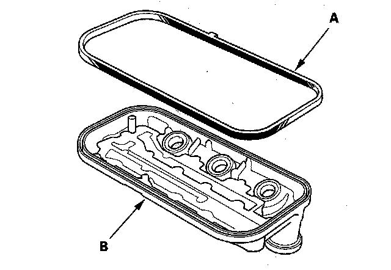
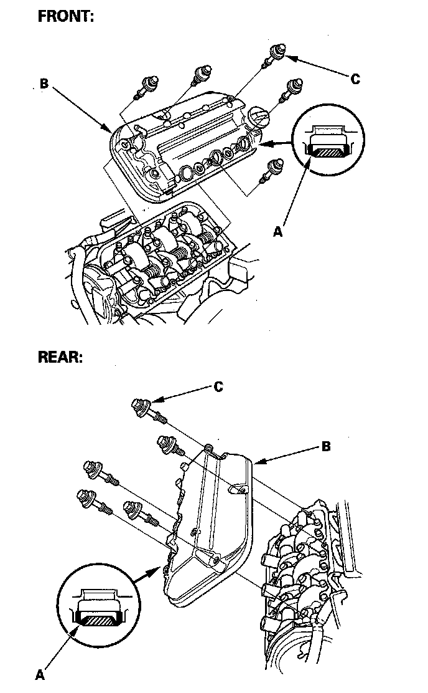
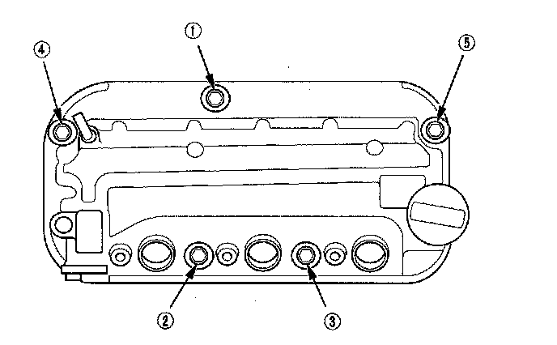
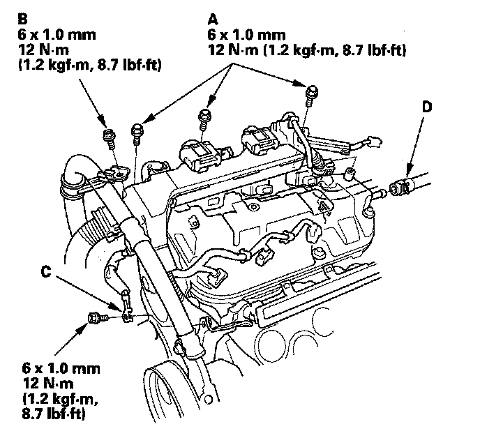
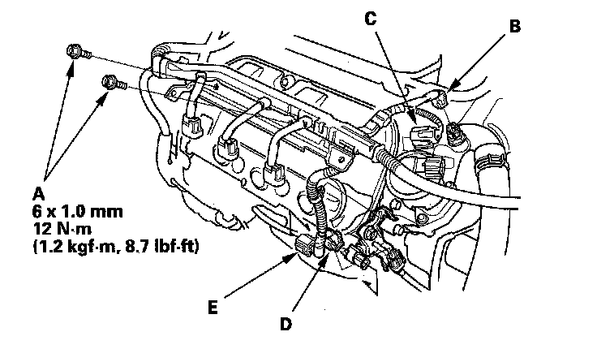

Cylinder Head Cover Installation
Cylinder Head Cover Installation1. Check the spark plug seals and head cover gasket for damage and deterioration. If any seal or gasket is damaged, replace it.
2. Thoroughly clean the head cover gasket and the groove of the cylinder cover.

3. Install the head cover gasket (A) in the groove of the cylinder head cover (B). Make sure the head cover gasket is seated securely.
4. Clean the head cover contacting surfaces with a shop towel.
5. Set the spark plug seals (A) on the spark plug tubes, and install the cylinder head cover (B).

6. Inspect the cover washers (C). Replace any washer that is damaged or deteriorated.
7. Tighten the bolts in two or three steps. In the final step tighten all bolts, in sequence, 12N-m (1.2 kgf-m, 8.7 lbf-ft).

8. Tighten the harness holder mounting bolts (A) and the power steering hose bracket mounting bolt (B).

9. Install the engine ground cable (C) and breather hose (D).
10. Connect the three injector connectors.
11. Tighten the two bolts (A) securing the harness holder, and connect the engine coolant temperature (ECT) sensor 1 connector (B), exhaust gas recirculation (EGR) valve connector (C), front secondary heated oxygen sensor (secondary H02S) connector (D) and front air fuel ratio (A/F) sensor connector (E).

12. Install the dipstick.
13. Install the six ignition coils.
14. Install the intake manifold.